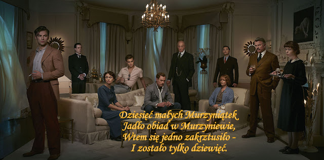

I nie było już nikogo
Dziesieć przypadkowych, nieznanych sobie ludzi zostaje zaproszonych do rezydencji na niewielkiej wyspie, każdy pod innym pretekstem. Gdy dojeżdżają na miejsce, okazuje się, że gospodarze są nieobecni, w domu jest tylko służba.W każdym z pokoi na ścianie wisi tajemniczy wierszyk, według którego pózniej w kolejności giną poszczególni goście.Czy ktoś jescze ukrywa się na wyspie?
